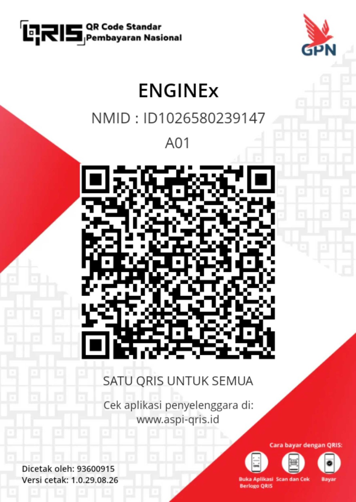

CALCULATOR
→
Calculator
Kalkulator cepat untuk perhitungan sehari-hari.
AREStyx menyediakan berbagai tools online gratis yang cepat, aman, sederhana dan dapat digunakan langsung melalui browser tanpa perlu instalasi.
Beberapa tools yang paling sering dibutuhkan.
Kalkulator cepat untuk perhitungan sehari-hari.
Hitung persentase dengan cepat dan mudah.
Konversi berbagai jenis satuan dengan mudah.
Hitung kata, karakter, kalimat dan paragraf.
Hitung umur berdasarkan tanggal lahir.
Buat password acak yang kuat dan aman.
Pilih kategori tools sesuai kebutuhanmu.
Jelajahi seluruh koleksi tools AREStyx.
Menampilkan 110 tools
Hitung ekspresi aritmetika dasar dengan parser aman.
Hitung persentase suatu nilai dengan cepat.
Hitung umur lengkap berdasarkan tanggal lahir.
Hitung indeks massa tubuh dari berat dan tinggi.
Hitung selisih hari antara dua tanggal.
Hitung durasi antara dua waktu, termasuk melewati tengah malam.
Hitung rata-rata dari daftar angka.
Hitung harga akhir dan nilai penghematan setelah diskon.
Sederhanakan rasio dua bilangan bulat.
Hitung ekspresi ilmiah tanpa eksekusi kode dinamis.
Tambah, kurang, kali, atau bagi dua pecahan.
Hitung faktor persekutuan terbesar dan kelipatan persekutuan terkecil.
Hitung median dari daftar angka.
Hitung standar deviasi populasi dan sampel.
Konversi panjang, massa, area, volume, kecepatan, dan energi dalam satu tool.
Konversi meter, kilometer, mil, kaki dan satuan panjang lainnya.
Konversi kilogram, gram, pound, ounce dan satuan massa lainnya.
Konversi Celsius, Fahrenheit dan Kelvin.
Konversi meter persegi, hektar, acre dan satuan luas lainnya.
Konversi liter, meter kubik, gallon dan satuan volume lainnya.
Konversi km/jam, m/s, mph dan knot.
Konversi Pascal, bar, PSI dan atmosphere.
Konversi Joule, kWh, kalori dan BTU.
Konversi Byte, KB, MB, GB, TB dan PB.
Konversi detik, menit, jam, hari dan minggu.
Konversi derajat, radian dan gradian.
Konversi Hz, kHz, MHz dan GHz.
Konversi Newton, kilonewton, kilogram-force dan pound-force.
Konversi Watt, kW, horsepower dan BTU/jam.
Konversi N·m, kN·m, lb-ft dan kgf·m.
Konversi kg/m³, g/cm³ dan lb/ft³.
Konversi L/s, L/min, m³/jam dan gallon/min.
Hitung kata, karakter, kalimat, dan paragraf.
Hitung karakter dengan dan tanpa spasi.
Ubah teks menjadi UPPERCASE, lowercase, Title Case, atau Sentence case.
Rapikan spasi ganda dan spasi berlebih.
Hapus baris yang sama sambil mempertahankan urutan.
Urutkan baris A-Z, Z-A, atau numerik.
Balik karakter atau urutan baris.
Cari teks dan ganti semua kemunculannya.
Ubah judul menjadi slug URL yang bersih.
Hitung jumlah baris, baris kosong, dan baris non-kosong.
Tampilkan kata yang paling sering muncul.
Ambil alamat email unik dari teks.
Ambil URL unik dari teks.
Hapus semua baris kosong dari teks.
Baca dimensi, ukuran file, tipe, dan rasio aspek gambar.
Ubah lebar dan tinggi gambar langsung di browser.
Kompres JPEG/WebP dengan pengaturan kualitas.
Konversi gambar ke PNG, JPEG, atau WebP.
Ubah gambar menjadi hitam putih melalui canvas lokal.
Putar gambar 90°, 180°, atau 270°.
Encode teks UTF-8 menjadi Base64.
Decode Base64 menjadi teks UTF-8.
Encode teks untuk parameter URL.
Decode komponen URL yang telah di-encode.
Format JSON dengan indentasi yang mudah dibaca.
Minify JSON tanpa mengubah data.
Validasi sintaks JSON dan tampilkan posisi kesalahan.
Escape karakter HTML menjadi entity aman.
Ubah HTML entities dasar kembali menjadi karakter.
Parse query string URL menjadi pasangan key-value.
Decode header dan payload JWT tanpa memverifikasi signature.
Buat hash SHA-256 melalui Web Crypto API.
Konversi tanggal ke Unix timestamp dan sebaliknya.
Konversi bilangan biner, oktal, desimal, dan heksadesimal.
Konversi warna HEX menjadi RGB.
Hitung network, broadcast, netmask, dan host dari IPv4/CIDR.
Buat password acak yang kuat menggunakan Web Crypto.
Buat UUID v4 acak.
Buat angka bulat acak dalam rentang pilihan.
Buat string acak dari karakter pilihan.
Buat PIN numerik acak dengan panjang pilihan.
Buat passphrase dari beberapa kata acak.
Simulasikan lemparan dadu dengan jumlah sisi pilihan.
Simulasikan hasil kepala atau ekor.
Hitung estimasi cicilan bulanan pinjaman dengan bunga tetap.
Hitung bunga sederhana dan nilai akhir.
Hitung pertumbuhan modal dengan bunga majemuk.
Hitung return on investment dalam persen.
Hitung laba kotor dan margin keuntungan.
Hitung harga jual berdasarkan biaya dan markup.
Tambahkan atau keluarkan pajak persentase dari harga.
Bandingkan harga per unit dari total harga dan jumlah.
Hitung unit minimum untuk mencapai break-even.
Hitung setoran bulanan sederhana untuk mencapai target.
Hitung compound annual growth rate.
Hitung depresiasi tahunan metode garis lurus.
Hitung tip dan pembagian total per orang.
Hitung efek dua diskon yang diterapkan berurutan.
Hitung konsumsi bahan bakar per jam dari volume dan durasi.
Hitung tegangan, arus, atau resistansi dari dua nilai yang diketahui.
Hitung daya dari tegangan dan arus.
Jumlahkan resistansi beberapa resistor seri.
Hitung resistansi ekuivalen resistor paralel.
Hitung tegangan keluaran rangkaian pembagi tegangan.
Estimasi durasi baterai dari kapasitas dan arus beban.
Hitung tegangan sekunder dari rasio lilitan.
Konversi frekuensi ke periode atau sebaliknya.
Konversi putaran per menit ke radian per detik.
Hitung torsi poros dari daya kW dan RPM.
Hitung rasio gear dan RPM keluaran.
Hitung daya hidrolik ideal dari tekanan dan debit.
Hitung kecepatan fluida dari debit dan diameter pipa.
Hitung Reynolds number dari densitas, kecepatan, diameter, dan viskositas.
Konversi tekanan ke head fluida berdasarkan densitas.
Hitung specific gravity dari densitas fluida.
Konversi API gravity ke specific gravity dan densitas perkiraan.
Hitung apparent propeller slip dari pitch, RPM, waktu, dan jarak aktual.
Hitung total displacement mesin dari bore, stroke, dan jumlah silinder.
Coba gunakan kata pencarian atau kategori yang berbeda.
AREStyx adalah platform utilitas digital yang menyatukan berbagai tools online dalam satu tempat. Tujuannya sederhana: membuat pekerjaan sehari-hari, perhitungan, konversi, pengolahan teks, kebutuhan developer dan engineering menjadi lebih cepat tanpa proses yang rumit.
Versi ini menyediakan 110 tools yang benar-benar memiliki implementasi, dan sebagian besar pemrosesan dilakukan langsung di browser pengguna. AREStyx tidak bergantung pada tracker pihak ketiga untuk menjalankan fungsi utamanya.
Kami akan terus memperluas katalog secara bertahap dengan prinsip yang sama: stabilitas lebih dulu, lalu keamanan, fungsi yang nyata, performa, SEO dan tampilan. AREStyx dikembangkan sebagai bagian dari ekosistem ARESTER GROUP.

AREStyx dibangun untuk menyediakan tools online yang gratis, cepat, aman dan mudah digunakan. Dukungan sukarela membantu pengembangan fitur baru, pemeliharaan, pengujian, serta peningkatan kualitas platform tanpa mengurangi akses gratis bagi pengguna.
Donasi bersifat sukarela. Gunakan aplikasi pembayaran yang mendukung QRIS dan selalu periksa detail penerima sebelum menyelesaikan pembayaran.

Temukan tools yang kamu butuhkan dan gunakan secara gratis.